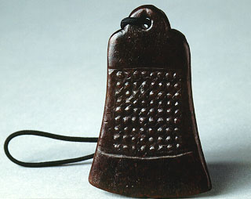

義助慰安婦 —— 李敖百件珍藏義賣藝術品（第100件） 品 名： I13. 胡因夢贈李敖古玉鐸 預估價： 100 萬 成交價： 100 萬 說 明： 中國對「玉」這種礦物向來情有獨鍾。古時富裕的人死後，身上都塞滿了玉（鼻子、耳朵、嘴巴、肛門等），玉在中國文化的地位可見一斑。許多人也相信玉器會帶來好運，如避邪、避難等。李敖個人收集了很多玉，離婚後，大部份放在前妻胡茵夢那裡。這塊戰國時代的古玉造型像鐘，上面有很多小點，乃此中珍品。是當年胡茵夢送李敖的。 
中國對「玉」這種礦物向來情有獨鍾。古時富裕的人死後，身上都塞滿了玉（鼻子、耳朵、嘴巴、肛門等），玉在中國文化的地位可見一斑。許多人也相信玉器會帶來好運，如避邪、避難等。李敖個人收集了很多玉，離婚後，大部份放在前妻胡茵夢那裡。這塊戰國時代的古玉造型像鐘，上面有很多小點，乃此中珍品。是當年胡茵夢送李敖的。